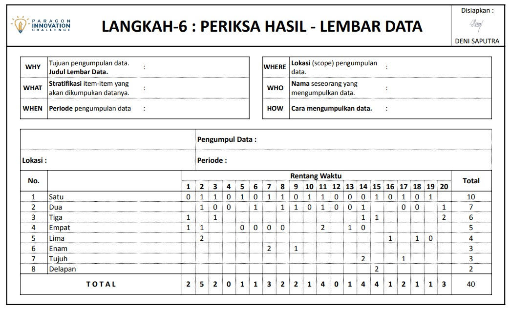
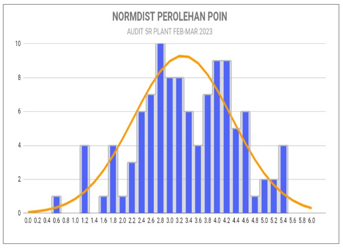
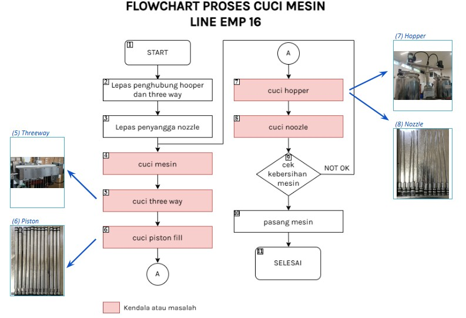

QIT BATCH 9 • 2026
QUALITY IMPROVEMENT TEAM
QIT BATCH 9
PLAY THE MISSION. WIN THE IMPROVEMENT.
Kolaborasi hari ini, perubahan nyata untuk masa depan yang lebih baik.
CURRENT WEEK
ACTIVE
WEEK 40
WEEK 40
28 SEPT – 4 OCT 2026
Pantau progres QIT Batch 9 minggu ini. Pastikan aktivitas tim, pertemuan, challenge, dan progres improvement tetap berjalan sesuai journey.
LIVE CHALLENGE • AUTO UPDATE
Top Team Point Challenge
Leaderboard Top 15 tim dengan poin tertinggi. Data tersinkron otomatis dari Dashboard Point Challenge.
LIVE
Mengambil data leaderboard...
Menunggu sinkronisasi
Hover / tap batang untuk melihat detail
QUICK ACCESS
What do you need?
Empat akses yang paling sering dibutuhkan selama perjalanan QIT.
QIT ACCESS CENTER
All QIT Resources
Akses lengkap untuk kebutuhan progress, attendance, challenge, reference, toolkit, dan learning QIT Batch 9.
MISSION
Aktivitas utama tim
CHALLENGE & REFERENCE
Monitoring dan acuan improvement
LEARNING
Materi pendukung QIT
QIT UPDATE NEW
Batch 9 is moving forward.
Satu titik informasi untuk progress, coaching, challenge, dan kebutuhan perjalanan QIT.
THE STORY BEHIND QIT
Tentang QIT
01
QUALITY IMPROVEMENT TEAM
Ide bergerak. Tim bertumbuh. Dampak tercipta.
“Improvement bukan hanya menemukan masalah — tetapi menggerakkan orang untuk menciptakan solusi.”
145
Jumlah Tim
BATCH 9 • CURRENT
144
Jumlah Fasilitator
BATCH 9 • CURRENT
35
Jumlah Coach
BATCH 9 • CURRENT
721
Total Peserta
BATCH 9 • CURRENTBatch 9
ACTIVE SEASONWHY WE MOVE
Tujuan
Meningkatkan kualitas kerja
Mendorong proses yang lebih stabil, efektif, aman, dan bernilai.
Menumbuhkan budaya improvement
Membiasakan setiap tim melihat masalah sebagai peluang untuk bergerak lebih baik.
Menciptakan solusi nyata
Mengubah ide menjadi aksi yang memberikan dampak bagi proses dan perusahaan.
WHAT WE BUILD
Manfaat
People
Kompetensi, kolaborasi, ownership, dan kepuasan kerja yang semakin kuat.
Process
Proses kerja yang lebih efektif, produktif, aman, dan konsisten.
Impact
Peningkatan mutu, pengurangan waste, serta nilai tambah yang berkelanjutan.
IMPROVEMENT TOOLKIT
8 Langkah & 7 Alat
8 Langkah Improvement
1
Identifikasi Masalah
2
Analisa Data
3
Analisa Sebab
4
Rencana Improvement
5
Pelaksanaan Improvement
6
Periksa Hasil
7
Standarisasi
8
Masalah Berikutnya
7 Alat Kualitas Dasar
-

ChecksheetDigunakan untuk mencatat dan mengumpulkan data secara sistematis.
-

HistogramDiagram batang untuk melihat distribusi data dan pola variasi.
-
 Control Chart
Control Chart
Membantu memantau kestabilan proses dari waktu ke waktu.
-
 Scatter Diagram
Scatter Diagram
Menunjukkan hubungan antara dua variabel dan kecenderungan data.
-
 Pareto Diagram
Pareto Diagram
Memprioritaskan masalah utama berdasarkan prinsip 80/20.
-
 Ishikawa Diagram
Ishikawa Diagram
Diagram sebab-akibat untuk mengidentifikasi akar masalah.
-

FlowchartVisualisasi langkah-langkah proses secara berurutan.
EVOLUTION DATABASE
History Team
| Parameter |
Batch 1
Mar ‘19 |
Batch 2
Jan ‘20 |
Batch 3
Oct ‘20 |
Batch 4
Nov ‘21 |
Batch 5
Sep ‘22 |
Batch 6
Sep ‘23 |
Batch 7
Sep ‘24 |
Batch 8
Aug ‘25 |
Batch 9
2026 |
|---|---|---|---|---|---|---|---|---|---|
| Jumlah Tim | 27 | 52 | 59 | 66 | 93 | 115 | 123 | 134 | 145 |
| Jumlah Fasilitator | 27 | 51 | 59 | 66 | 93 | 114 | 114 | 143 | 144 |
| Jumlah Coach | 1 | 4 | 9 | 13 | 22 | 24 | 32 | 32 | 35 |
| Total Peserta | 162 | 280 | 295 | 322 | 465 | 566 | 659 | 665 | 721 |
QIT JOURNEY • 2019 — 2026
The Evolution of QIT
Sembilan batch. Satu budaya improvement yang terus berkembang.
QIT BATCH 1
- Masa pengenalan
- 7–8 anggota dari depertemen yang sama
- Mayoritas group leader, line leader, dan kartap
- Identifikasi dengan brainstorming
QIT BATCH 2
- 6–7 orang di departemen yang sama
- Sudah melibatkan personil kontrak
- Identifikasi masalah sudah gunakan data
- Mulai sesi virtual
QIT BATCH 3
- Pemerataan anggota (cross department)
- 5 anggota per tim
- Diprioritaskan personil dengan sisa kontrak panjang
- Tema ditentukan & pertemuan virtual
QIT BATCH 4
- Tema terkait Company Objective
- Pendekatan “Bring the Joy of Innovation” (fun challenge)
- Pertemuan kembali offline
- Undang perwakilan supplier pada QIT Day
QIT BATCH 5
- Cycle QIT tanpa jeda; Top 6 QIT batch 4 berlanjut
- Perluasan fun challenge + boost progress 8 langkah
- Traffic pertemuan rutin meningkat; coaching genba
- Tim terbaik mewakili Paragon di TKMPN
QIT BATCH 6
- Semakin banyak tim melanjutkan cycle improvement
- Keikutsertaan HO; kemandirian dalam pertemuan & coaching
- Evaluasi rutin tim coach selama proses berjalan
- Perluasan keikutsertaan National Convention
QIT BATCH 7
- 69 tim melanjutkan cycle improvement
- Improvement cross dept 7 tim
- Perluasan keikutsertaan tim: Supplier 7 tim, HO 4 tim, DC (tbc)
QIT BATCH 8
- Penguatan dampak improvement lewat pemaknaan objective yang tepat
- Perluasan keterlibatan supplier
QIT BATCH 9
ACTIVE
- New season, new challenge
- Kolaborasi & improvement berkelanjutan
- Journey Batch 9 sedang berjalan
AWARD
PEMENANG QIT
Apresiasi untuk tim terbaik yang berhasil menciptakan improvement berdampak.
Dokumentasi belum ditambahkan
Upload foto dengan nama file yang sesuai untuk menampilkannya di section ini.
CIC
CIC
Dokumentasi perjalanan dan pencapaian tim pada ajang CIC.
Dokumentasi belum ditambahkan
Upload foto dengan nama file yang sesuai untuk menampilkannya di section ini.
TKMPN
TKMPN
Perjalanan tim Paragon membawa improvement ke panggung kompetisi nasional.
Dokumentasi belum ditambahkan
Upload foto dengan nama file yang sesuai untuk menampilkannya di section ini.
MOMENT
KESERUAN QIT BATCH 9
Setiap momen menyimpan cerita, kolaborasi, dan langkah kecil menuju improvement yang lebih besar.
MEDIA CHANNEL
Video
QIT BATCH 9 • TEAM REVEAL
MEET THE TEAMS
PLAY THE MISSION. WIN THE IMPROVEMENT.
PLAYER TEAM
Q261001
OPTIQ
MISSION ACTIVE
QIT CONTACT CENTER
CONTACT PERSON
Hubungi PIC QIT Batch 9 sesuai kebutuhan informasi dan area support kamu.
DEDEN
Event Coordinator 0878 1404 5175Jatake 6 & 3
Chat WhatsAppMILA
PIC Area 0878 1404 5008Jatake 1 & 3
Chat WhatsAppDENI
PIC Area 0878 1582 5017Supplier
Chat WhatsAppTAMI
PIC Area 0859 4687 0850Jatake 4
Chat WhatsAppLIA
PIC Area 0878 1727 7513Jatake 2 & 5
Chat WhatsApp